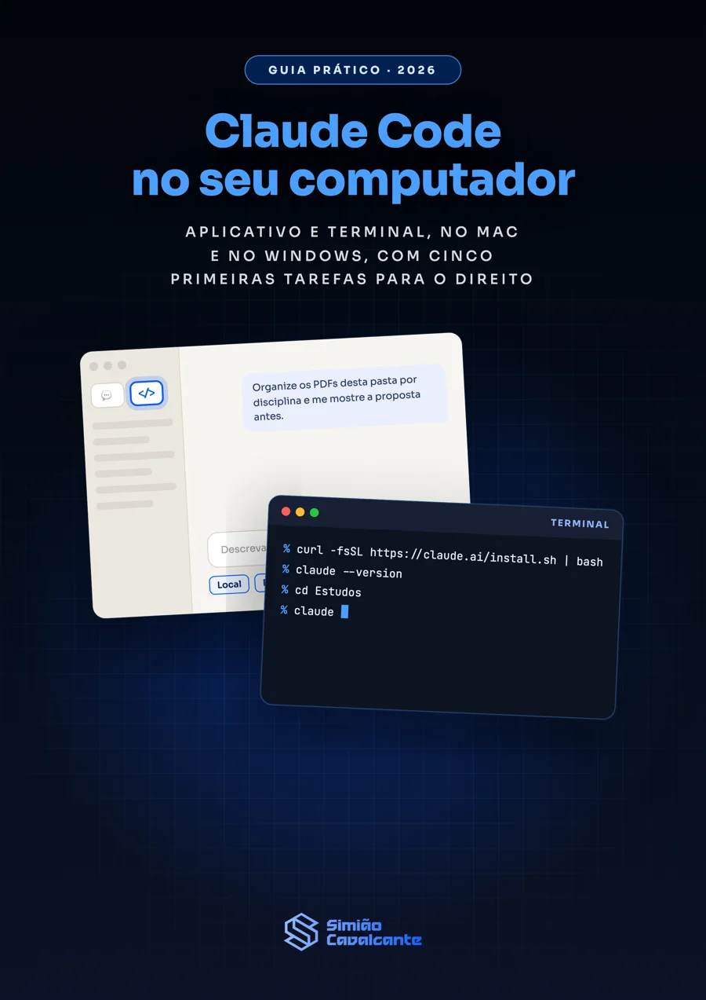
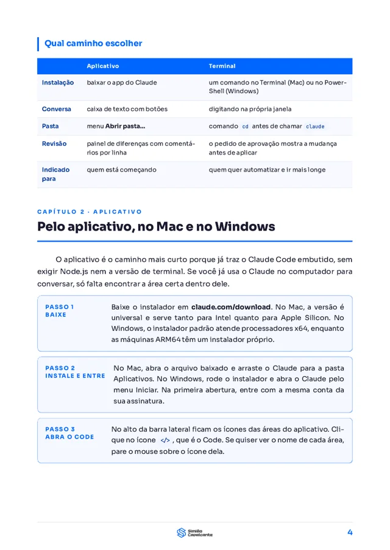
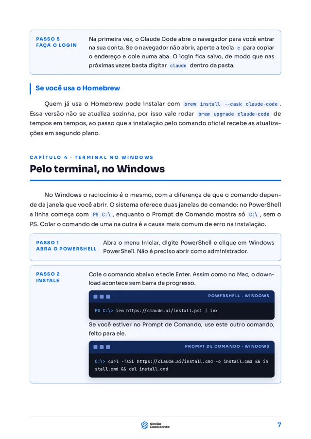
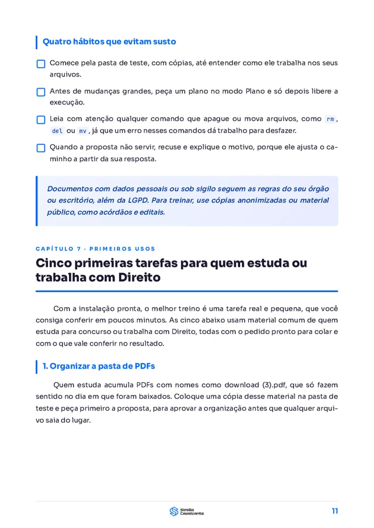

O passo a passo pelo aplicativo do Claude e pelo terminal, no Mac e no Windows, com os erros mais comuns e cinco primeiras tarefas para quem estuda ou trabalha com Direito.
Baixar o guia em PDF
O que muda entre o aplicativo e o terminal, o plano exigido e o computador mínimo.
Do download ao ícone de código, com o ambiente Local, a pasta e o modo de permissão.
O comando de instalação, a conferência da versão e o primeiro login pelo navegador.
PowerShell ou Prompt de Comando, cada um com o seu comando, além do Git for Windows.
A mensagem que aparece na tela ao lado da correção indicada pela documentação.
Os modos Manual, Aceitar edições, Plano e Auto, com quatro hábitos que evitam susto.
Pasta de PDFs, cronograma do edital, ficha de acórdão, quadro comparativo e CLAUDE.md.



Procurador do Município do Rio de Janeiro e professor, uso o Claude Code todos os dias no trabalho e nos estudos. No Instagram e no YouTube, mostro como levar a inteligência artificial para a prática jurídica e para a preparação para concursos.
Baixe o guia, siga o caminho que combina com você e me conte nos comentários do reel qual foi a sua primeira tarefa.
Baixar o guia em PDF